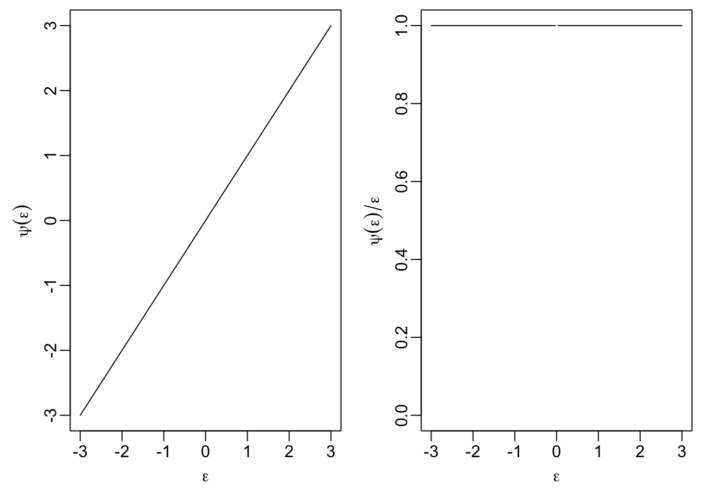
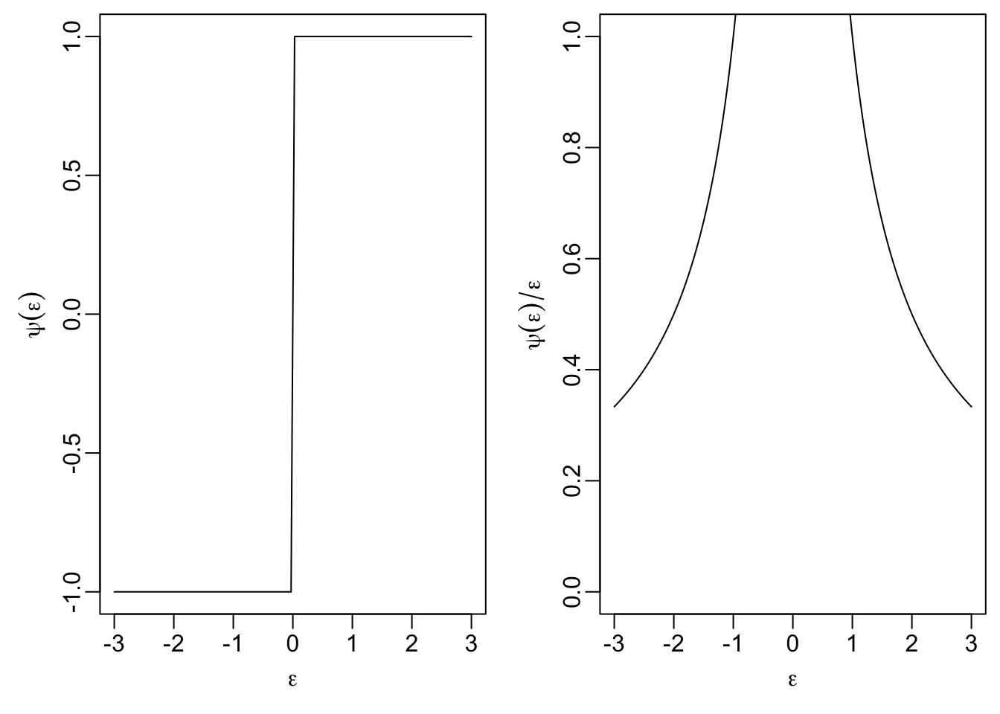
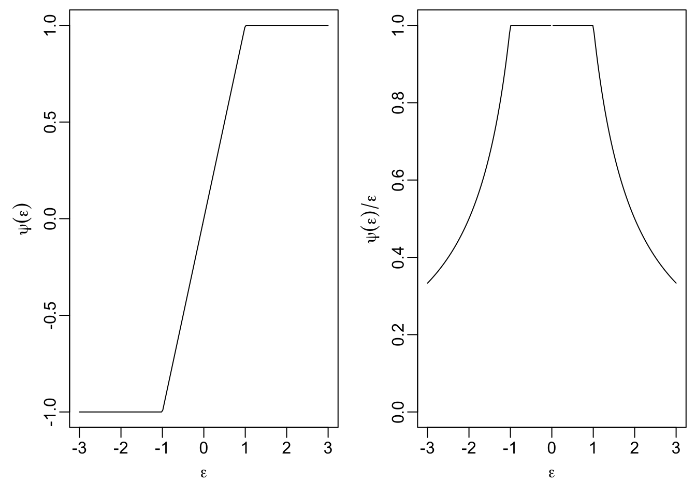
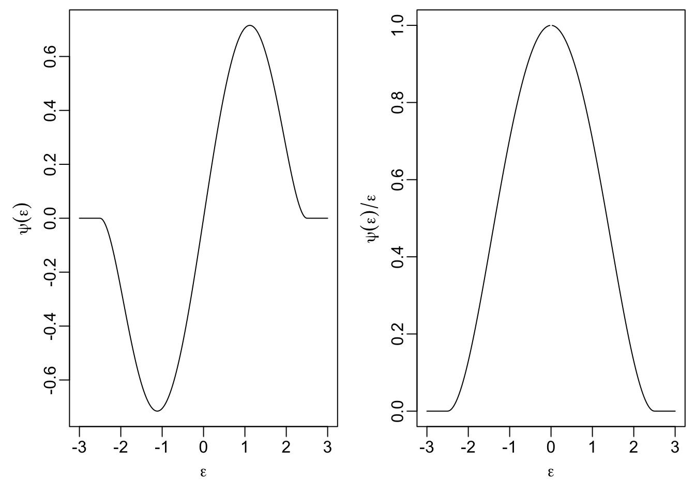

Section 18 M-Estimators
In this section we introduce a class of estimators which can be robust to \(y\)-space outliers.
18.1 Definition
Definition 18.1 An M-estimator for the regression coefficients \(\beta\) is a method which computes the estimator \(\hat\beta\) as \[\begin{equation*} \hat\beta = \mathop{\mathrm{arg\,min}}\limits_\beta r(\varepsilon) = \mathop{\mathrm{arg\,min}}\limits_\beta r(y - X\beta), \end{equation*}\] where \(r\) is given by \[\begin{equation*} r(\varepsilon) = \sum_{i=1}^n \rho(\varepsilon_i) \end{equation*}\] and \(\rho\colon \mathbb{R}\to \mathbb{R}\) is a symmetric, continuous function with a unique minimum at \(0\). The function \(\rho\) is called the objective function of the M-estimator.
This is a generalisation of the least squares estimator, where the least squares estimator corresponds to the case \(\rho(\varepsilon) = \varepsilon^2\).
For most functions \(\rho\) there is no closed-form expression for
the estimate \(\hat\beta\), but numerical minimisation can be used to find
numerical values for \(\hat\beta\). In R, the function optim()
can be used for this purpose.
Example 18.1 The M-estimator with \(\rho(u) = |u|\) is called the least absolute values (LAV) estimator. Since \(\rho\) grows slower than \(u^2\) as \(|u| \to\infty\), this estimator is more resistant to \(y\)-space outliers than least squares regression is. On the other hand, for \(x\)-space outliers which are sufficiently far away from the bulk of the data, the LAV line will pass exactly through the corresponding point \((x_i, y_i)\), so the LAV estimator is more susceptible to \(x\)-space outliers than least squares regression is, and the breakdown point is still \(1/n\).
set.seed(202111202)
n <- 12
x <- seq(0, 5, length.out = n+1)[-(n/2+1)]
y <- 1 + 0.4 * x + rnorm(n, sd = 0.3)
m <- lm(y ~ x)
# we try four different extra samples, one after another:
x.extra <- seq(2.5, 20, length.out = 4)
y.extra <- c(-1, -1, -1, -1)
lav <- function(par, x, y) {
beta0 <- par[1]
beta1 <- par[2]
sum(abs(y - beta0 - beta1*x))
}
par(mfrow = c(2, 2), # We want a 2x2 grid of plots,
mai = c(0.7, 0.7, 0.1, 0.1), # using smaller margins, and
mgp = c(2.5, 1, 0)) # we move the labels closer to the axes.
for (i in 1:4) {
plot(x, y, xlim = c(0, 21), ylim = c(-1, 5))
abline(m)
o <- optim(c(0, 0), lav, NULL, c(x, x.extra[i]), c(y, y.extra[i]))
abline(o$par[1], o$par[2], col="red", lty="dashed")
points(x.extra[i], y.extra[i], col = "red", pch = 16)
}
Define \(s(\beta) = r(y - X\beta)\). Then we have \[\begin{equation} \hat\beta = \mathop{\mathrm{arg\,min}}\limits_\beta s(\beta). \tag{18.1} \end{equation}\] Some care is neede since the function \(s\) may have more than one local minimum, and even the global minimum may not be uniquely defined.
Lemma 18.1 Assume that \(\rho\) is convex. Then \(s\) is convex.
Proof. Here we use the property that a function \(f\colon \mathbb{R}^{p+1} \to \mathbb{R}\) is convex, if and only if \[\begin{equation*} f\bigl( \lambda \beta^{(1)} + (1 - \lambda) \beta^{(2)} \bigr) \leq \lambda f\bigl( \beta^{(1)} \bigr) + (1 - \lambda) f\bigl( \beta^{(2)} \bigr) \end{equation*}\] for all \(\beta^{(1)}, \beta^{(2)}\in \mathbb{R}^{p+1}\) and all \(\lambda \in [0, 1]\). Since \(\rho\) is convex, we find \[\begin{align*} \hskip1cm&\hskip-1cm s\bigl( \lambda \beta^{(1)} + (1 - \lambda) \beta^{(2)} \bigr) \\ &= r\Bigl( y - X \bigl(\lambda \beta^{(1)} + (1 - \lambda) \beta^{(2)} \bigr) \Bigr) \\ &= r\Bigl( \lambda \bigl( y - X \beta^{(1)} \bigr) + (1 - \lambda) \bigl( y - X \beta^{(2)} \bigr) \Bigr) \\ &= \sum_{i=1}^n \rho \Bigl( \lambda \bigl( y - X \beta^{(1)} \bigr)_i + (1 - \lambda) \bigl( y - X \beta^{(2)} \bigr)_i \Bigr) \\ &\leq \sum_{i=1}^n \Bigl( \lambda \rho \bigl( y - X \beta^{(1)} \bigr)_i + (1 - \lambda) \rho \bigl( y - X \beta^{(2)} \bigr)_i \Bigr) \\ &= \lambda r\bigl( y - X \beta^{(1)} \bigr) + (1 - \lambda) r\bigl( y - X \beta^{(2)} \bigr) \\ &= \lambda s\bigl( \beta^{(1)} \bigr) + (1 - \lambda) s\bigl( \beta^{(2)} \bigr). \end{align*}\] Thus \(s\) is convex and the proof is complete.
This shows that the problem of finding \(\hat\beta\) is better behaved when \(\rho\) is convex. For example, in this case, every local minimum of \(s\) is also a global minimum and the set of all minima is a convex set.
M-estimates in general are not scale-invariant, i.e. if \(y\) is measured in different units, the regression line changes. A scale-invariant, robust estimator is given by \[\begin{equation*} \hat\beta = \mathop{\mathrm{arg\,min}}\limits_\beta r\Bigl( \frac{\varepsilon}{\hat\sigma} \Bigr) = \mathop{\mathrm{arg\,min}}\limits_\beta r\Bigl( \frac{y - X\beta}{\hat\sigma} \Bigr), \end{equation*}\] where \(\hat \sigma\) is a robust estimator of the residual standard deviation, for example the median absolute deviation (MAD) given by \[\begin{equation*} \hat\sigma = \mathop{\mathrm{median}}\bigl| \hat\varepsilon_i - \mathop{\mathrm{median}}(\hat\varepsilon_i) \bigr|. \end{equation*}\]
18.2 Iterative Methods
If \(\rho\) is differentiable, say \(\rho' = \psi\), then gradient-based methods can be used to find the minimum in equation (18.1). The basis of this approach is the following lemma.
Lemma 18.2 If \(\rho' = \psi\), then the M-estimate satisfies \[\begin{equation} \sum_{i=1}^n \psi\bigl( (y - X\hat\beta)_i \bigr) \begin{pmatrix} 1 \\ x_{i1} \\ \vdots \\ x_{ip} \end{pmatrix} = 0 \in \mathbb{R}^{p+1}. \tag{18.2} \end{equation}\]
Proof. Since \(\hat\beta\) minimises the function \(r\), we have \[\begin{align*} 0 &= \left. \frac{\partial}{\partial\beta_j} r\bigl( y - X\beta \bigr) \right|_{\beta=\hat\beta} \\ &= \left. \frac{\partial}{\partial\beta_j} \sum_{i=1}^n \rho\bigl( (y - X\beta)_i \bigr) \right|_{\beta=\hat\beta} \\ &= \left. \sum_{i=1}^n \psi\bigl( (y - X\beta)_i \bigr) \frac{\partial}{\partial\beta_j} \bigl( y - X\beta \bigr)_i \right|_{\beta=\hat\beta} \\ &= \left. \sum_{i=1}^n \psi\bigl( (y - X\beta)_i \bigr) (-x_{ij}) \right|_{\beta=\hat\beta} \\ &= - \sum_{i=1}^n \psi\bigl( (y - X\hat\beta)_i \bigr) x_{ij}. \end{align*}\] where we use the convention \(x_{i0} = 1\). This completes the proof.
With the result of the lemma, we have turned the problem of finding \(\hat\beta\) into the problem of finding the roots of a non-linear function. To solve this problem, we can for example use one of the generic root finding algorithms, for example Newton’s method.
In the context of M-estimates, a more specialised method is often used in the literature. For this method we define weights \[\begin{equation} w_i := \frac{\psi\bigl( (y - X\hat\beta)_i \bigr)}{(y - X\hat\beta)_i} \tag{18.3} \end{equation}\] and write \(W\) for the diagonal matrix which has \(w_1, \ldots, w_n\) on the diagonal. Using this notation, we can rewrite condition (18.2) as \[\begin{equation*} X^\top W (y - X\hat\beta) = 0 \end{equation*}\] and solving for \(\hat\beta\) gives \[\begin{equation} \hat\beta = (X^\top W X)^{-1} X^\top W y. \tag{18.4} \end{equation}\] This equation looks very similar to our formula for the least squares estimate, the only change being the presence of the matrix \(W\). One can check that the value \(\hat\beta\) computed in this way also represents the solution of the weighted least-squares problem \[\begin{equation*} \hat\beta = \mathop{\mathrm{arg\,min}}\limits_\beta \sum_{i=1}^n w_i \bigl( y_i - \beta_0 - \beta_1 x_{i1} - \cdots - \beta_p x_{ip} \bigr)^2. \end{equation*}\]
While equation (18.4) looks like the solution of a linear problem at first glance, the weight matrix \(W\) depends on \(\hat\beta\) and this equation still represents a non-linear equation for \(\hat\beta\).
The iteratively re-weighted least squares method is an iterative method for solving equation (18.4). Starting from an initial guess \(\hat\beta^{(0)}\) for \(\hat\beta\), e.g. the least squares estimate or the zero vector, the method repeats the following steps for \(k = 0, 1, 2, \ldots\):
Using equation (18.3), compute the weight matrix \(W^{(k)}\) corresponding to \(\hat\beta^{(k)}\).
Compute \(\displaystyle\hat\beta^{(k+1)} = (X^\top W^{(k)} X)^{-1} X^\top W^{(k)} y\).
The algorithm finishes either after a fixed number of steps, or when the values of \(\hat\beta^{(k)}\) don’t change much between steps any more, or when the “residual” \(X^\top W (y - X\hat\beta)\) is “small enough”.
18.3 Objective Functions
In this section we will discuss different choices of the objective function \(\rho\), together with the derivative \(\psi\) and the weight function \(w(\varepsilon) = \psi(\varepsilon) / \varepsilon\).
18.3.1 Least Squares Method
Here we can write \[\begin{equation*} \rho(\varepsilon) = \varepsilon^2 / 2. \end{equation*}\] The factor \(1/2\), which we omitted before, does not change the estimate. We include the factor here to give \(\psi\) a simpler form and to make comparison to the following examples easier. The derivative of \(\rho\) is given by \[\begin{equation*} \psi(\varepsilon) = \varepsilon \end{equation*}\]
The following R code can be used to plot \(\psi\) and the weight function \(w\):
eps <- seq(-3, 3, length.out = 201)
psi <- function(eps) eps
par(mfrow = c(1, 2),
mai = c(0.7, 0.7, 0.1, 0.1),
mgp = c(1.7, 0.5, 0))
plot(eps, psi(eps), type="l",
xlab = expression(epsilon), ylab = expression(psi(epsilon)))
plot(eps, psi(eps) / eps, type="l", ylim = c(0, 1),
xlab = expression(epsilon),
ylab = expression(psi(epsilon)/epsilon))
The right-hand plot shows that weight of observations does not depend on their magnitude. This property is what makes the least squares estimate susceptible to outliers.
18.3.2 Least Absolute Values
Here we have \[\begin{equation*} \rho(\varepsilon) = |\varepsilon|. \end{equation*}\] The derivative of this function is \[\begin{align*} \psi(\varepsilon) &= \begin{cases} -1 & \mbox{if } \varepsilon< 0, \\ +1 & \mbox{if } \varepsilon> 0 \end{cases} \\ &= \mathop{\mathrm{sign}}(\varepsilon) \end{align*}\] and the weight function is \[\begin{equation*} w(\varepsilon) = \frac{\mathop{\mathrm{sign}}(\varepsilon)}{\varepsilon} = \frac{1}{|\varepsilon|}. \end{equation*}\]
t <- 1
psi <- function(eps) sign(eps)
par(mfrow = c(1, 2),
mai = c(0.7, 0.7, 0.1, 0.1),
mgp = c(1.7, 0.5, 0))
plot(eps, psi(eps), type="l",
xlab = expression(epsilon), ylab = expression(psi(epsilon)))
plot(eps, psi(eps) / eps, type="l", ylim = c(0, 1),
xlab = expression(epsilon),
ylab = expression(psi(epsilon)/epsilon))
18.3.3 Huber’s \(t\)-function
This method uses the following objective function: \[\begin{equation*} \rho(\varepsilon) = \begin{cases} \frac12 \varepsilon^2 & \mbox{if } |\varepsilon|\leq t \\ t|\varepsilon| - \frac12 t^2 & \mbox{if } |\varepsilon| > t \end{cases} \end{equation*}\] The parameter \(t > 0\) can be used to tune the method. The influence function \(\psi\) is given by \[\begin{equation*} \psi(\varepsilon) = \begin{cases} \varepsilon& \mbox{if } |\varepsilon|\leq t \\ t \mathop{\mathrm{sign}}(\varepsilon) & \mbox{if } |\varepsilon| > t. \end{cases} \end{equation*}\]
A plot of \(\psi\) and \(\psi(\varepsilon) / \varepsilon\) shows that for this method the weight of observations where the residuals satisfy \(|\varepsilon_i| \leq t\) is the same as for least squares, but larger residuals get lower weights, leading to a more robust estimator.
t <- 1
psi <- function(eps) ifelse(abs(eps) <= t, eps, t * sign(eps))
par(mfrow = c(1, 2),
mai = c(0.7, 0.7, 0.1, 0.1),
mgp = c(1.7, 0.5, 0))
plot(eps, psi(eps), type="l",
xlab = expression(epsilon), ylab = expression(psi(epsilon)))
plot(eps, psi(eps) / eps, type="l", ylim = c(0, 1),
xlab = expression(epsilon),
ylab = expression(psi(epsilon)/epsilon))
18.3.4 Hampel’s Method
Here we have tuning parameters \(0 < a < b < c\), and the objective function is \[\begin{equation*} \rho(\varepsilon) = \begin{cases} \frac{1}{2}\varepsilon^2& \mbox{ if } |\varepsilon|\le a\\ a |\varepsilon|-\frac{1}{2} a^2 & \mbox{ if } a \le |\varepsilon| <b\\ a \frac{(|\varepsilon|-c)^2}{2(b-c)}+\frac{1}{2}a(b+c-a) & \mbox{ if } b \le |\varepsilon| \le c\\ \frac{a(b+c-a)}{2} & \mbox{ otherwise,} \end{cases} \end{equation*}\] with derivative \[\begin{equation*} \psi(\varepsilon) = \begin{cases} \varepsilon& \mbox{if } |\varepsilon|\leq a, \\ a \mathop{\mathrm{sign}}(\varepsilon) & \mbox{if } a < |\varepsilon| \leq b, \\ a \frac{\varepsilon- c \mathop{\mathrm{sign}}(\varepsilon)}{b - c} & \mbox{if } b < |\varepsilon| \leq c, \\ 0 & \mbox{if } c < |\varepsilon|. \end{cases} \end{equation*}\] Since these formulas are tedious to understand, we consider plots of \(\psi\) and \(\psi(\varepsilon) / \varepsilon\) again:
a <- 0.5
b <- 1.5
c <- 2.5
psi <- function(eps) {
ifelse(abs(eps) <= a, eps,
ifelse(abs(eps) <= b, a * sign(eps),
ifelse(abs(eps) <= c,
a * (eps - c*sign(eps)) / (b - c),
0)))
}
par(mfrow = c(1, 2),
mai = c(0.7, 0.7, 0.1, 0.1),
mgp = c(1.7, 0.5, 0))
plot(eps, psi(eps), type="l",
xlab = expression(epsilon), ylab = expression(psi(epsilon)))
plot(eps, psi(eps) / eps, type="l", ylim = c(0, 1),
xlab = expression(epsilon),
ylab = expression(psi(epsilon)/epsilon))
We see that small residuals, with \(|\varepsilon_i| \leq a\) get the same weight as for least squares regression, and the weight for larger residuals is gradually reduced. Residuals with \(|\varepsilon_i| > c\) have weight \(0\) and do not affect the location of the regression line at all.
We see that \(\psi\) is not increasing and therefore \(\rho\) is not convex. A consequence of this fact is that the function \(s\) may have several local minima and care must be used when choosing the starting point of iterative minimisation methods.
18.3.5 Tukey’s Bisquare Method
Here we have only one tuning parameter, \(a > 0\), and the objective function is \[\begin{equation*} \rho(\varepsilon) = \begin{cases} \frac{a^2}{6} \Bigl( 1 - \bigl( 1 - (\varepsilon/a)^2 \bigr)^3 \Bigr) & \mbox{if } |\varepsilon| \leq a \\ \frac{a^2}{6} & \mbox{if } |\varepsilon| > a \end{cases} \end{equation*}\] with derivative \[\begin{equation*} \psi(\varepsilon) = \begin{cases} \varepsilon\bigl( 1 - (\varepsilon/a)^2 \bigr)^2 & \mbox{if } |\varepsilon| \leq a \\ 0 & \mbox{if } |\varepsilon| > a. \end{cases} \end{equation*}\] The plots show that this is a simplified variant of Hampel’s estimator:
a <- 2.5
eps <- seq(-3, 3, length.out = 201)
psi <- function(eps) {
ifelse(abs(eps) <= a,
eps * (1 - (eps / a)^2)^2,
0)
}
par(mfrow = c(1, 2),
mai = c(0.7, 0.7, 0.1, 0.1),
mgp = c(1.7, 0.5, 0))
plot(eps, psi(eps), type="l",
xlab = expression(epsilon), ylab = expression(psi(epsilon)))
plot(eps, psi(eps) / eps, type="l", ylim = c(0, 1),
xlab = expression(epsilon),
ylab = expression(psi(epsilon)/epsilon))
Again, \(\rho\) is not convex and care is needed when computing the estimate \(\hat\beta\).
Summary
- We introduced the M-estimator as a robust method for estimating regression coefficients.
- We discussed the iteratively re-weighted least squares method for computing M-estimates.
- We discussed different choices for the objective function of an M-estimator.